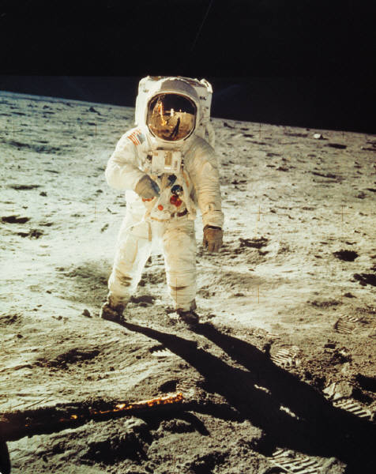

La conquista
Esta pagina trata acerca de una de las conquistas mas apasionantes del ser humano,quiza tan importante como cuando Cortes conquisto el nuevo mundo, estamos hablando de la conquistabde la luna.
En los 60s.
|
En los años 60 s el hombre llego a la luna utilizando tecnologias que hoy en dia serian un tanto rudimentarias. |
La llegada.
 |
Antes de alunizar,los astronautas tuvieron que rondar alrederor de la luna, experiencia que segun comentarios de estos, fue peligrosa pero inolvidable. |
El alunizaje
 |
Todo el mundo estuvo a la espectativa para ver por television el momento en que un hombre pisara la superficie de la luna por primera vez. |
La primera huella
 |
Esta es una de las fotografias mas difundidas en la historia del hombre, es la primera huella del hombre en la luna. |
Explorando
|  | En esa mision hubo mucha activida cientifica en la superficie Lunar. |
 |
 |
La vista
 |
Asi se ve la tierra desde la luna, esta es quiza una de las vistas mas bella de nuestra casa. |
En la acualidad
 |
 |
|
 |
Con la tecnologia moderna, hemos podido conquistar el espacio y hasta vivir en el. |  |